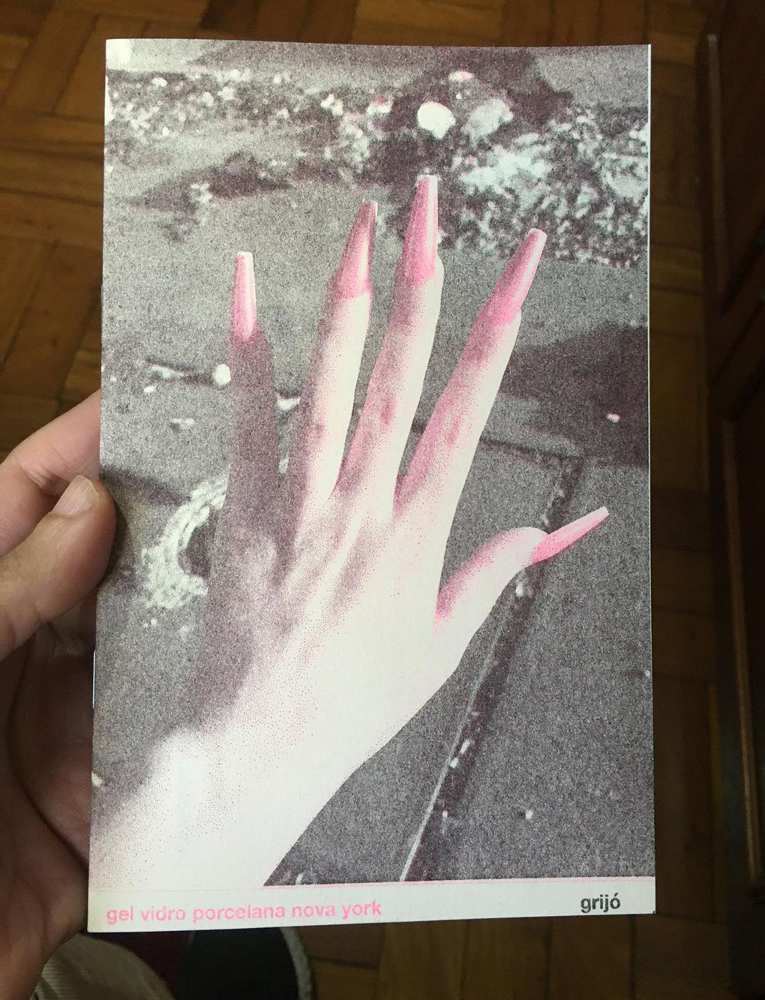

formação
[2022] cursando o CLIPE (Curso Livre de Preparação de Escritores) - Casa das Rosas/Fundação Haroldo de Campos.
produção
[2022] a plaquete-zine 'gel vidro porcelana nova york', editada e impressa em 2022 pelo selo faísca lab, conta com 13 poemas e algumas fotografias. foi impressa através da técnica da risografia, nas cores preto e rosa neon, em uma tiragem de 100 exemplares. há exemplares disponíveis para venda.
[2016] o texto 'De Calle a Vater: anotações breves sobre mulheres e livros de artistas' foi publicado no número 3 do Jornal de Borda, com ediçãp de Fernanda Grigolin. Para download, clique aqui.